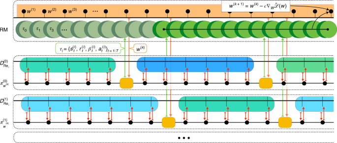
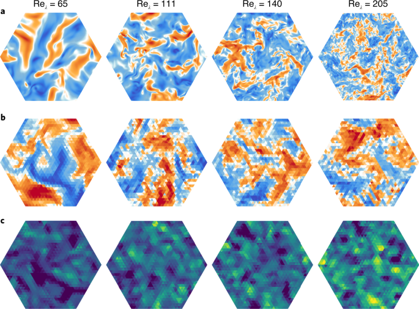
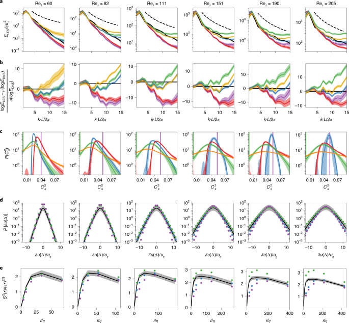

Automating turbulence modelling by multi-agent reinforcement learning
Multi-agent reinforcement learning (MARL) can automate the discovery of subgrid-scale closure models for large-eddy simulations of turbulent flows without any supervised training on DNS data. The learned policy (πLL) matches or surpasses classical Smagorinsky-based models in reproducing the energy spectrum of direct numerical simulations and, critically, generalizes across unseen Reynolds numbers and grid resolutions well beyond the training regime. This establishes MARL as a principled alternative to both hand-crafted physics models and supervised learning for computational fluid dynamics.
Why It Matters
- Breaks the supervised-learning bottleneck in CFD. All prior data-driven turbulence models relied on supervised learning requiring expensive filtered DNS targets and suffering from compounding a priori/a posteriori errors. MARL bypasses this by optimizing directly against high-level flow statistics.
- Generalization is the key advance. Classical SGS models require manual tuning per flow regime. The MARL policy, trained on Reynolds numbers Reλ ∈ {65–163}, remains stable and accurate up to Reλ = 205 — a regime never seen during training.
- Grid-resolution transfer at no extra training cost. The policy trained on 323 grids transfers to 643 and 1283 grids by simply scaling the number of agents — no retraining needed.
- Physically meaningful beyond the reward objective. Even though MARL only optimizes energy spectra, the learned model correctly recovers kinetic energy, integral length scales, and dissipation rates — quantities never included in training.
- Entirely open-source and reproducible. Flow solver (
CubismUP_3D), RL library (smarties), and training code are all publicly available on GitHub at github.com/cselab/MARL_LES.
Why Nature Machine Intelligence (Editorial Fit)
- Principled first use of MARL in scientific simulation: introduces a methodologically novel paradigm (multi-agent RL as automated model discovery) rather than applying an existing ML method to a data task.
- High-impact application domain: turbulence modelling underpins aircraft design, climate forecasting, and nuclear reactor engineering — the societal stakes justify top-tier placement.
- Addresses an open fundamental problem: the a priori / a posteriori gap in data-driven closure models is a recognized grand challenge; MARL provides a unified framework that dissolves the distinction between the two evaluation modes.
- Generalizable beyond the case study: the authors explicitly show the framework extends to any non-linear conservation law, not just Navier–Stokes — a hallmark of Nature-level universality.
Core Data — Sources & Volume
- Data type
- All data are synthetically generated via numerical simulation — no observational or real-world datasets are used. The paper is entirely based on computational experiments.
- DNS reference data
- Direct numerical simulations on a uniform 5123 grid (and 1,0243 for visualization) for a periodic cubic domain (2π)3, covering Taylor–Reynolds numbers Reλ ∈ [60, 205] in log increments. Twenty independent DNS per Reλ, each lasting 20 τI, with measurements every τη.
- LES training grids
- Large-eddy simulations on 323 grids (approximately four orders of magnitude cheaper than DNS), Reλ sampled from {65, 76, 88, 103, 120, 140, 163} during training. Evaluation also at 643 and 1283.
- RL experience volume
- ~105 experiences per LES simulation; replay memory of 106 steps; 107 policy gradient steps per training run; mini-batch size B = 512.
- Flow solver
- CubismUP 3D — open-source CFD code with second-order spatial discretization and pressure-projection scheme: github.com/cselab/CubismUP_3D
- RL library
- smarties — open-source RL library implementing V-RACER with ReF-ER (Remember and Forget Experience Replay): github.com/cselab/smarties
- Data availability
- Reference data, figure scripts, and training/evaluation instructions: github.com/cselab/MARL_LES
| Dataset / Code | Role | Volume / Scope | Access |
|---|---|---|---|
| CubismUP 3D (DNS) | Reference flow data generator | 5123 grid; Reλ ∈ [60–205]; 20 independent runs per Re | GitHub |
| CubismUP 3D (LES) | RL environment for agent interaction | 323, 643, 1283 grids; 7 training Re values | GitHub |
| smarties (V-RACER + ReF-ER) | Policy training and experience replay | 107 gradient steps; replay memory NRM = 106 | GitHub |
| MARL_LES (scripts + reference data) | Reproducibility pipeline | Complete training, evaluation, and figure-generation scripts | GitHub |
Note: all data are computationally generated; no external observational datasets are used. Numbers above are taken verbatim from the article's Methods section.
Core Methods
- Multi-agent RL (MARL) setup: Nagents = 43 = 64 agents dispersed uniformly in the LES domain, each observing a 28-dimensional state (5 invariants of the velocity gradient + 6 invariants of the Hessian, non-dimensionalized, plus global energy spectrum modes up to Nyquist frequency and dissipation rates). All agents share a single policy network with ∼6,211 parameters.
- Policy network: feed-forward NN with 2 hidden layers of 64 units each, tanh activations, skip connections; outputs mean and standard deviation of a Gaussian policy over the local Smagorinsky dissipation coefficient Cs2.
- ReF-ER (Remember and Forget Experience Replay): off-policy algorithm combining experience replay (V-RACER) with a KL-divergence trust-region constraint that rejects samples with importance weights outside [1/C, C] and adds a penalty term to attract the policy back toward past behavior. Critical for stabilizing MARL training where correlated agent actions create confounding feedback.
- Reward functions: two variants — rG (local Germano-identity error) and rLL (global regularized log-likelihood of LES energy spectrum vs. DNS statistics). The rLL reward produces the best-performing model.
- Baselines: Standard Smagorinsky Model (SSM, fixed Cs) and Dynamic Smagorinsky Model (DSM, spatiotemporally adaptive Cs via Germano identity) — both widely used industrial-standard LES closure models.
- Generalization evaluation: models evaluated on held-out Reλ ∈ {60, 82, 111, 151, 190, 205} (all unseen during training) and on grids 643, 1283 with proportionally scaled agent counts.
Core Figures & Tables






Tables: no main-text tables (Tables = 0). Supplementary Information contains the Reporting Summary only.